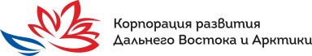
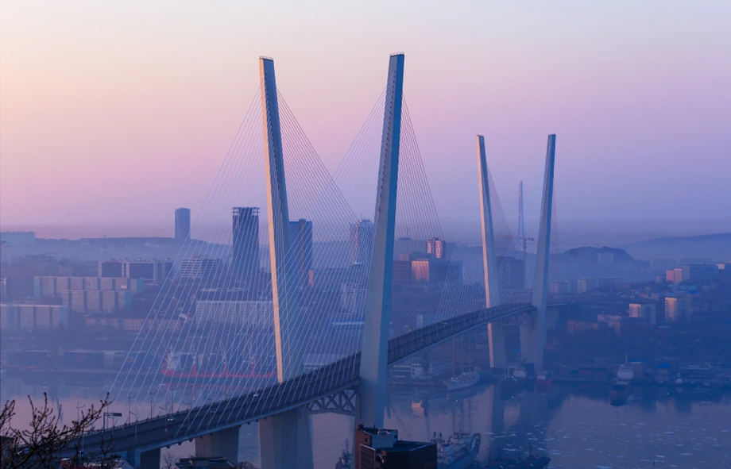
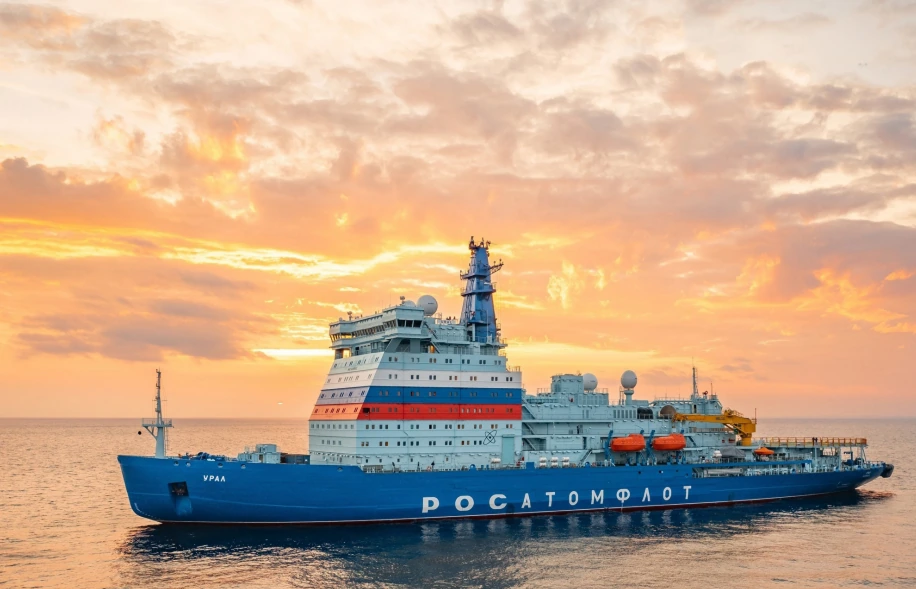
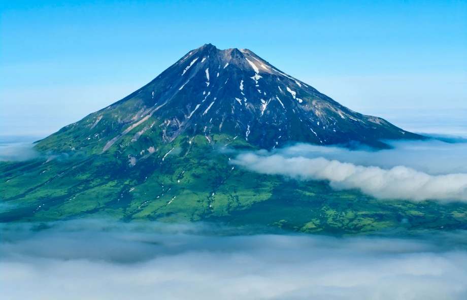

Шрифт для логотипа
Сейчас надпись набрана болгарскими формами букв. Если просто заменить их на TT Norms, получится, что лотос и надпись поют в разных операх. Лотос нарисован как каллиграфия: дуги-полумесяцы, острые концы, тонкие сужения. Надписи нужен гротеск, который спокойно держит эту пластику: круглые овалы, острые вершины, чистые соединения.

1. Геометрический: Futura PT
РекомендуюОвал «О» — почти правильный круг, как дуги лепестков. Острые вершины «А», «Д», «Л» и «К» перекликаются с остриями лотоса. Штрих ровный и лёгкий, поэтому сложный знак остаётся главным. Шрифт строгий, но не холодный. В концепте набрано Jost — свободным аналогом Futura; для логотипа стоит взять Futura PT из каталога ParaType, у неё родная кириллица.
2. С контрастом: Tenor Sans
АльтернативаГуманистический гротеск с тонкими сужениями в соединениях — как сужения в лепестках. Самый «каллиграфичный» и премиальный, но мягче и хуже держится в мелких размерах. Есть только одно начертание.
3. Гуманистический: Commissioner
СпокойныйОткрытые формы и живой, чуть рукописный ритм. Современный и нейтральный: не спорит с лотосом, но и не добавляет характера.
4. Мягкий геометрический: Wix Madefor Display
Близко к Circe и MontШирокие овалы, дружелюбный характер. Хорошо читается, но звучит скорее как цифровой сервис, чем как корпорация.
Логотип с Futura PT
Лотос не меняется. Основная версия — полное название; короткая — «КРДВ» с подписью «Дальний Восток и Арктика», чтобы Арктика не потерялась в аббревиатуре.
Это набор шрифтом. Для настоящего логотипа надпись дорабатывает шрифтовой дизайнер: расстояния между буквами, толщина рядом со знаком, высота относительно лотоса.
Графика: «Ближе, чем кажется»
Само слово «дальний» отталкивает: далеко, дорого, сложно. Графика КРДВ спорит с этим ощущением. Утро в России начинается на Востоке, поэтому главная форма — арка восходящего солнца. Она же окно, в котором видна обычная, понятная жизнь: город, работа, учёба, природа. Цвета — утренние, тёплые и светлые, а не тёмные и холодные.
Палитра «Утро»
Светлая основа, красный — только солнце, синий — новый, ярче и чище.
Арка
Солнце над горизонтом, дверь и окно. Главная форма системы.
Местное время
Плашка с живым временем — мостик между «там» и «здесь».
Шрифт и голос
Заголовки — шрифтом логотипа, тексты — TT Norms Pro.
Дальний Восток ближе, чем кажется

Билборд. Арка поднимается от нижнего края, как солнце над горизонтом. Солнце выглядывает из-за неё.
Арктика ближе, чем кажется

Пост. Арктика на рассвете — тёплая, а не «край света».
День в России начинается здесь
Пост. Пять часовых поясов Дальнего Востока — пять арок. Время на макете живое.
Камчатка ближе, чем кажется

Сторис.
Три причины переехать
Карусель: каждая карточка — арка.
Ближе,
чем кажется
Мерч: арка, солнце и фраза без логотипа.
Обложка презентации.
Моушн: арки поднимаются с запада на восток, за последней встаёт солнце.